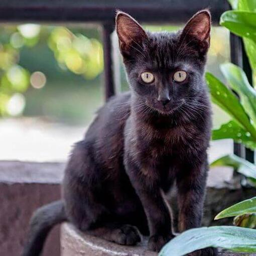
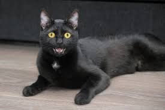
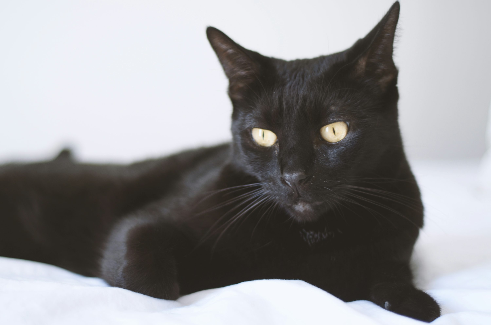

El gato bombay parece una pantera en miniatura. Es un gato elegante, pero fuerte, y tiene una naturaleza curiosa, activa y muy afectuosa. Le gusta pasar tiempo con sus dueños y también puede ser muy sociable con otras personas.
El bombay es un gato relajado, pero lleno de energía. Le gusta vivir en apartamentos tranquilos donde es el centro de atención, así como en hogares animados con niños y otras mascotas. Te hablará con una voz clara y es probable que lo encuentres en el lugar más cálido de tu hogar, ya sea bajo la luz solar de una ventana o acurrucado bajo las sábanas de la cama contigo.
Nikki Horner, un criador de Louisville, Kentucky, comenzó a desarrollar la raza en la década de 1950 mediante la cruza de un burmés color sable con un gato americano de pelo corto. La Asociación de Aficionados a los Gatos (Cat Fanciers Association, CFA) reconoció a la raza bombay en 1978 y hoy es reconocida por todas las asociaciones de gatos. Aunque aún se permite cruzar a los gatos americanos de pelo corto negros con los burmeses color sable, se hace con poca frecuencia debido a las diferencias de las razas respecto al tipo de cuerpo.

Una enfermedad genética que los gatos bombay pueden sufrir es un defecto craneofacial que a veces se ve en los gatitos recién nacidos. Sin embargo, los criadores responsables hacen todo lo posible por evitar la reproducción de gatos que portan el gen de este defecto mortal. Los gatos bombay también pueden ser más propensos a la miocardiopatía hipertrófica, el desgarro excesivo de los ojos y a problemas respiratorios debido a su estructura facial plana.